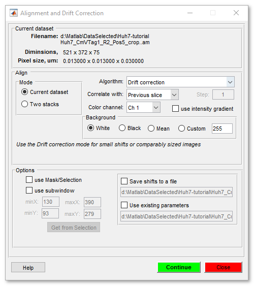
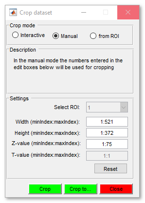
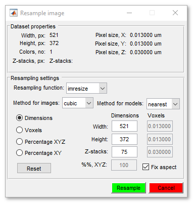
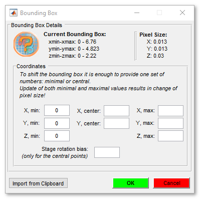
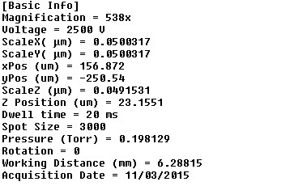
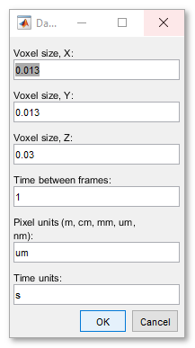

Dataset Menu
Modify parameters such as voxel sizes and the bounding box for the dataset, start the Alignment tool, or do some other dataset related actions.
Back to Index --> User Guide --> Menu
Contents

Alignment tool...
Can be used to align the slices of the opened dataset or to align two separate datasets. See details here.

Crop dataset...
Crop the image and corresponding Selection, Mask, and Model layers. Cropping can be done in the Interactive, Manual or using ROI mode.
A brief demonstration is available in the following video:
 https://youtu.be/PQtpYUuJwG8
https://youtu.be/PQtpYUuJwG8

When the interactive mode is selected it is possible to draw (by pressing and holding left mouse button) a rectangle area a top of the image. This area can then be used for cropping.
The values for cropping may also be provided directly by enabling the Manual mode. It is also possible to do cropping based on the selected ROI. Use the ROI panel to make them.
The dataset can be just cropped (the Crop button) or copied to another buffer and cropped (the Crop to button). The multiple buffer buttons buttons located at the top of the Directory Contents panel.
The cropped datasets can be placed back to the original dataset using the Fuse into existing mode of the Chop image tool available at Menu->File->Chop images...->Import.... See more here.
Resample...
Resample image in any possible direction.
A brief demonstration is available in the following video:
https://youtu.be/26-HROwg_JM

Transform
Transformation of dataset: image and all other layers. The following modes are possible
| Add frame -> provide new width/height | specify the frame by providing new width and height of the dataset. |
| Add frame -> provide dX/dY | pads dataset in X (Frame width, px) and Y (Frame height,
px) directions with a distinct number (Intensity pad value)
or using various repetition methods:
|
| Flip horizontally | - flips dataset left to right, returns the dataset with columns flipped in the left-right direction, that is, about a vertical axis |
| Flip vertically | - flips dataset up to down, returns the dataset with rows flipped in the up-down direction, that is, about a horizontal axis |
| Flip Z | - flips dataset in the Z dimension, returns the dataset with slices flipped in the first-last direction, that is, about a middle slice of the dataset |
| Flip Y | - flips dataset in the T dimension, returns the dataset with time frames flipped in the first-last direction, that is, about a middle frame of the dataset |
| Rotate 90 degrees | - rotates dataset 90 degrees clockwise diirection |
| Rotate -90 degrees | - rotates dataset 90 degrees anti-clockwise diirection |
| Transpose XY -> ZX | - physically transposes the dataset, so that the XY orienation, becomes ZX |
| Transpose XY -> ZY | - physically transposes the dataset, so that the XY orienation, becomes ZY |
| Transpose ZX -> ZY | - physically transposes the dataset, so that the ZX orienation, becomes ZY |
| Transpose Z <-> T | - physically transposes the dataset, so that the Z orienation, becomes T |
Flip:
https://youtu.be/lGjhB-NJZMkRotate:
https://youtu.be/WFbZn0rfb5ITranspose:
https://youtu.be/PyEXX7j6pncSlice
Manipulations with individual slices of the dataset. The following actions are possible
- Copy slice... - allows to copy slice from one position to another position within the same dataset (the 'Replace' options) or to insert one slice to another position in the dataset (the 'Insert' option). A short demo.
- Insert an empty slice - insert a uniformly colored slice to any position inside the dataset. A short demo.
- Delete slice(s)... - removes desired slice(s) from a Z-stack of the dataset. For example, type " 5:10 " to delete all slices from slice 5 to slice 10.
- Delete frame(s)... - removes desired frame(s) from a time series of the dataset.
- Swap slices... - spaw two or more slices
Scale bar
Scale bar is a tool that allows to use a scale bar printed on the image to calibrate physical size (X and Y) for pixels in MIB.
A brief demonstration is available in the following video:
https://youtu.be/NZO0HG1d8ys
Bounding Box...
Bounding Box defines position of the dataset in the 3D space; the bounding box information is important for positioning of datasets in the visualization software, such as Amira. The bounding box can be shifted based on its minimal or centeral coordinates. The current coordinates of the bounding box are shown under the Current Bounding Box text.
Attention! For 3D images the bounding box is calculated as the smallest box containing all voxel centers, but not all voxels as is! I.e. it's defined by the voxel centers, which means that a 1/2 voxel on both sides of the bounding box are subtracted, resulting in a bounding box that is 1 voxel smaller in all three directions.
A brief demonstration is available in the following video:
https://youtu.be/lY0XjNy4Dr8

- X, Y, Z, min - defines minimal coordinates of the bounding box
- X, Y, center - defines central coordinates of the dataset. When the central coordinates are used the X, min and Y, min coordinates are going to be recalculated.
- *X, Y, Z max - maximal values of the bounding box. When entered together with the X, Y, Z min coordinates - MIB recalculates the voxel sizes.
- Stage rotation bias, degrees - implemented only when entering X, Y center coordinates. Allows recalculation of the coordinates for the cases when the stage has some rotation bias, for example, Gatan 3View has 45 degrees stage bias.
- Import from Clipboard, parses text in the system clipboard and automatically extracts the following parameters (syntax: [ParameterName] = [ParameterValue]):
| Parameter Name | Description |
| ScaleX | The physical size of pixels in X |
| ScaleY | The physical size of pixels in Y |
| ScaleZ | The physical size of pixels in Z |
| xPos | Central position of the dataset in the X plane |
| yPos | Central position of the dataset in the Y plane |
| Z Position | Minimal Z coordinate |
| Rotation | Rotation BIAS Note! Since it is designed for Gatan 3View system MIB adds 45 degrees to the detected rotation value |
Example of text that can be copied to the system clipboard for automatic detection of paramters:

Parameters
Modifies parameters of the dataset: voxels sizes, frame rate for movies and units. Enter of new voxels results in recalculation of the bounding box.

Back to Index --> User Guide --> Menu